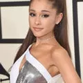
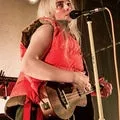

Ariana Grande
Singer
Ariana Grande-Butera (/ˌɑːriˈɑːnə ˈɡrɑːndeɪ/; born June 26, 1993) is an American singer, songwriter, and actress.
Billie Eilish
Singer
Billie Eilish Pirate Baird O'Connell (/ˈaɪlɪʃ/; born December 18, 2001) is an American singer and songwriter.
Shawn Mendes
Singer
Shawn Peter Raul Mendes (/ˈmɛndɛz/; born August 8, 1998) is a Canadian singer, songwriter, and model.
Grace VanderWaal
Singer

Grace Avery VanderWaal (born January 15, 2004) is an American singer-songwriter from Suffern, NY.